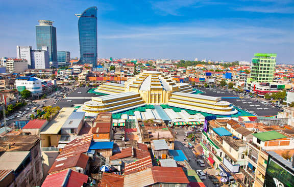

ព្រះរាជាណាចក្រកម្ពុជា (Khmer)
Preâh Réachéanachâkr Kâmpŭchéa (UNGEGN)
Motto: ជាតិ សាសនា ព្រះមហាក្សត្រ
Chéatĕ, Sasânéa,Preâh Môhaksâtr
(English: "Nation, Religion, king")
Anthem: បទនគររាជ
Nôkôr Réach
(English: "Majestic Kingdom")
Capital and largest city: Phnom Penh
Official language and national language: Khmer
From Wikipedia, the free encyclopedia
This article is about the country. For the song, see Cambodia (song).
"Kampuchea" redirects here. For other uses, see Kampuchea (disambiguation).
Cambodia (/kæmˈboʊdiə/ ⓘ; Khmer: កម្ពុជា; UNGEGN: Kâmpŭchéa),[14] officially the Kingdom of Cambodia (Khmer: ព្រះរាជាណាចក្រកម្ពុជា; UNGEGN: Preâh Réachéanachâkr Kâmpŭchéa), is a country in Mainland Southeast Asia, spanning an area of 181,035 square kilometres (69,898 square miles), bordered by Thailand to the northwest, Laos to the north, Vietnam to the east, and the Gulf of Thailand to the southwest. The capital and most populous city is Phnom Penh. In 802 AD, Jayavarman II declared himself king, uniting the warring Khmer princes of Chenla under the name "Kambuja".[15] This marked the beginning of the Khmer Empire. The Indianised kingdom facilitated the spread of first Hinduism and then Buddhism to Southeast Asia and undertook religious infrastructural projects throughout the region. In the fifteenth century, Cambodia experienced a decline of power, and in 1863, it became a protectorate of France. After a period of Japanese occupation during the Second World War, Cambodia gained independence in 1953. The Vietnam War extended into the country in 1965 via the Ho Chi Minh and Sihanouk trails. A 1970 coup installed the US-aligned Khmer Republic, which was overthrown by the Khmer Rouge in 1975. The Khmer Rouge ruled the country and carried out the Cambodian genocide from 1975 until 1979, when they were ousted in the Cambodian–Vietnamese War. The Vietnamese-occupied People's Republic of Kampuchea became the de facto government. Following the 1991 Paris Peace Accords which formally ended the war with Vietnam, Cambodia was governed by a United Nations mission (1992–93). The UN withdrew after holding elections in which around 90% of the registered voters cast ballots. The 1997 coup d'état consolidated power under Prime Minister Hun Sen and the Cambodian People's Party (CPP). While constitutionally a multi-party state,[16] CPP dominates the political system and dissolved its main opposition party in 2017, making Cambodia a de facto one-party state.[17] The United Nations designates Cambodia as a least developed country.[18] Cambodia is a member of the United Nations, ASEAN, the RCEP, the East Asia Summit, the WTO, the Non-Aligned Movement and La Francophonie. Cambodia is a dialogue partner of the Shanghai Cooperation Organization.[19][20] Agriculture remains the dominant economic sector, with growth in textiles, construction, garments, and tourism leading to increased foreign investment and international trade.[21] Cambodia is considered among the most vulnerable countries to climate change.
[Top]
There exists sparse evidence for a Pleistocene human occupation of present-day Cambodia, which includes quartz and quartzite pebble tools found in terraces along the Mekong River, in Stung Treng and Kratié provinces, and in Kampot Province, although their dating is unreliable.[29] Some slight archaeological evidence shows communities of hunter-gatherers inhabited the region during Holocene: the most ancient archaeological discovery site in Cambodia is considered to be the cave of Laang Spean, which belongs to the Hoabinhian period. Excavations in its lower layers produced a series of radiocarbon dates around 6000 BC.[29][30] Upper layers in the same site gave evidence of transition to Neolithic, containing the earliest dated earthenware ceramics in Cambodia.[31] Archaeological records for the period between Holocene and Iron Age remain equally limited. A pivotal event in Cambodian prehistory was the slow penetration of the first rice farmers from the north, which began in the late third millennium BC.[32] The most curious prehistoric evidence in Cambodia are the various "circular earthworks" discovered in the red soils near Memot and in the adjacent region of Vietnam in the latter 1950s. Their function and age are still debated, but some of them possibly date from second millennium BC.[33][34] Other prehistoric sites of somewhat uncertain date are Samrong Sen (not far from the ancient capital of Oudong), where the first investigations began in 1875,[35] and Phum Snay, in the northern province of Banteay Meanchey.[36] Iron was worked by about 500 BC, with supporting evidence coming from the Khorat Plateau, in modern-day Thailand. In Cambodia, some Iron Age settlements were found beneath Baksei Chamkrong and other Angkorian temples while circular earthworks at the site of Lovea a few kilometres north-west of Angkor. Burials testify to improvement of food availability and trade, and the existence of a social structure and labour organization.[37] Different kinds of glass beads recovered from several sites across Cambodia, such as the Phum Snay site in the northwest and the Prohear site in the southeast, suggest that there were two main trading networks at the time. The two networks were separated by time and space, which indicate that there was a shift from one network to the other at about 2nd–4th century AD, probably due to changes in socio-political powers.[37]
During the 3rd, 4th, and 5th centuries, the Indianised states of Funan and its successor, Chenla, coalesced in present-day Cambodia and southwestern Vietnam. For more than 2,000 years, what was to become Cambodia absorbed influences from India, passing them on to other Southeast Asian civilisations that are now Thailand and Laos.[38] Little else is known for certain of these polities, however Chinese chronicles and tribute records do make mention of them. It is believed that the territory of Funan may have held the port known to Alexandrian geographer Claudius Ptolemy as "Kattigara". The Chinese chronicles suggest that after Jayavarman I of Chenla died around 681, turmoil ensued which resulted in the division of the kingdom into Land Chenla and Water Chenla which was loosely ruled by weak princes under the dominion of Java. The Khmer Empire grew out of these remnants of Chenla, becoming firmly established in 802 when Jayavarman II (reigned c. 790 – c. 835) declared independence from Java and proclaimed himself a Devaraja. He and his followers instituted the cult of the God-king and began a series of conquests that formed an empire which flourished in the area from the 9th to the 15th centuries.[39] During the rule of Jayavarman VIII the Angkor empire was attacked by the Mongol army of Kublai Khan, however, the king was able to buy peace.[40] Around the 13th century, Theravavada missionaries from Sri Lanka reintroduced Theravada Buddhism to Southeast Asia; having sent missionaries previously in 1190s.[41][42] The religion spread and eventually displaced Hinduism and Mahayana Buddhism as the popular religion of Angkor; however it was not the official state religion until 1295 when Indravarman III took power.[43] The Khmer Empire was Southeast Asia's largest empire during the 12th century. The empire's centre of power was Angkor, where a series of capitals were constructed during the empire's zenith. In 2007 an international team of researchers using satellite photographs and other modern techniques concluded that Angkor had been the largest pre-industrial city in the world with an urban sprawl of 2,980 square kilometres (1,151 square miles).[44] The city, which could have supported a population of up to one million people[45] and Angkor Wat, the best known and best-preserved religious temple at the site, still serves as a reminder of Cambodia's past as a major regional power. The empire, though in decline, remained a significant force in the region until its fall in the 15th century.
After a long series of wars with neighbouring kingdoms, Angkor was sacked by the Ayutthaya Kingdom and abandoned in 1432 because of ecological failure and infrastructure breakdown.[46][47] This led to a period of economic, social, and cultural stagnation when the kingdom's internal affairs came increasingly under the control of its neighbours. By this time, the Khmer penchant for monument building had ceased. Older faiths such as Mahayana Buddhism and the Hindu cult of the god-king had been supplanted by Theravada Buddhism. The court moved the capital to Longvek where the kingdom sought to regain its glory through maritime trade. The first mention of Cambodia in European documents was in 1511 by the Portuguese. Portuguese travellers described the city as a place of flourishing wealth and foreign trade. Continued wars with Ayutthaya and the Vietnamese resulted in the loss of more territory and Longvek being conquered and destroyed by King Naresuan the Great of Ayutthaya in 1594. A new Khmer capital was established at Oudong south of Longvek in 1618, but its monarchs could survive only by entering into what amounted to alternating vassal relationships with the Siamese and Vietnamese for the next three centuries with only a few short-lived periods of relative independence. The hill tribe people in Cambodia were "hunted incessantly and carried off as slaves by the Siamese (Thai), the Annamites (Vietnamese), and the Cambodians".[48][49] In the nineteenth century, a renewed struggle between Siam and Vietnam for control of Cambodia resulted in a period when Cambodia became the Tây Thành Province of Nguyễn Vietnam, during which Vietnamese officials attempted to force the Khmers to adopt Vietnamese customs. This led to several rebellions against the Vietnamese and appeals to Thailand for assistance. The Siamese–Vietnamese War (1841–1845) ended with an agreement to place the country under joint suzerainty. This later led to the signing of a treaty for French Protection of Cambodia by King Norodom Prohmborirak.
[Top]In 2017 Cambodia's per capita income is $4,022 in PPP and $1,309 in nominal per capita. The United Nations designates Cambodia as a least developed country. Most rural households depend on agriculture and its related sub-sectors. Rice, fish, timber, garments, and rubber are Cambodia's major exports. The International Rice Research Institute (IRRI) reintroduced more than 750 traditional rice varieties to Cambodia from its rice seed bank in the Philippines.[165] These varieties had been collected in the 1960s. Based on the Economist, IMF: Annual average GDP growth for the period 2001–2010 was 7.7% making it one of the world's top ten countries with the highest annual average GDP growth. Tourism was Cambodia's fastest-growing industry, with arrivals increasing from 219,000 in 1997 to over 2 million in 2007. In 2004, inflation was at 1.7% and exports at US$1.6 billion. Food stands in Siem Reap "Two decades of economic growth have helped make Cambodia a global leader in reducing poverty. The success story means the Southeast Asian nation that overcame a vicious civil war now is classified as a lower-middle income economy by the World Bank Group (WBG). Among 69 countries that have comparable data, Cambodia ranked fourth in terms of the fastest poverty reduction in the world from 2004 to 2008. (See more details of Cambodia's achievements on poverty reduction. The poverty rate fell to 10 per cent in 2013, and further reduction of poverty is expected for both urban and rural households throughout 2015–2016. However, human development, particularly in the areas of health and education, remains an important challenge and development priority for Cambodia"[166] Oil and natural gas deposits found beneath Cambodia's territorial waters in 2005 yield great potential but remain mostly untapped, due in part to territorial disputes with Thailand.[167][168]
In 2017 Cambodia's per capita income is $4,022 in PPP and $1,309 in nominal per capita. The United Nations designates Cambodia as a least developed country. Most rural households depend on agriculture and its related sub-sectors. Rice, fish, timber, garments, and rubber are Cambodia's major exports. The International Rice Research Institute (IRRI) reintroduced more than 750 traditional rice varieties to Cambodia from its rice seed bank in the Philippines.[165] These varieties had been collected in the 1960s. Based on the Economist, IMF: Annual average GDP growth for the period 2001–2010 was 7.7% making it one of the world's top ten countries with the highest annual average GDP growth. Tourism was Cambodia's fastest-growing industry, with arrivals increasing from 219,000 in 1997 to over 2 million in 2007. In 2004, inflation was at 1.7% and exports at US$1.6 billion. Food stands in Siem Reap "Two decades of economic growth have helped make Cambodia a global leader in reducing poverty. The success story means the Southeast Asian nation that overcame a vicious civil war now is classified as a lower-middle income economy by the World Bank Group (WBG). Among 69 countries that have comparable data, Cambodia ranked fourth in terms of the fastest poverty reduction in the world from 2004 to 2008. (See more details of Cambodia's achievements on poverty reduction. The poverty rate fell to 10 per cent in 2013, and further reduction of poverty is expected for both urban and rural households throughout 2015–2016. However, human development, particularly in the areas of health and education, remains an important challenge and development priority for Cambodia"[166] Oil and natural gas deposits found beneath Cambodia's territorial waters in 2005 yield great potential but remain mostly untapped, due in part to territorial disputes with Thailand.[167][168]

The garment industry represents the largest portion of Cambodia's manufacturing sector, accounting for 80% of the country's exports. In 2012, the exports grew to $4.61 billion up 8% over 2011. In the first half of 2013, the garment industry reported exports worth $1.56 billion.[175] The sector employs 335,400 workers, of which 91% are female. Better Factories Cambodia was created in 2001 as a unique partnership between the UN's International Labour Organization (ILO) and the International Finance Corporation (IFC), a member of the World Bank Group. The programme engages with workers, employers, and governments to improve working conditions and boost the competitiveness of the garment industry.[176] On 18 May 2018, the Project Advisory Committee (PAC) of the ILO Better Factories Cambodia Programme met in Phnom Penh to provide input into the draft conclusions and recommendations of the BFC's independent mid-term evaluation, as well as to discuss options on how to further strengthen the programme's transparent reporting initiative. The members of the PAC concurred with the findings of the evaluation related to the impact the programme has had on the Cambodian garment sector and workers, including: a. contributing to sustained overall growth of the garment industry b. improving the lives of at least half a million Cambodian workers of factories in the BFC programme and many more of their family members; c. ensuring that workers receive correct wages and social protection benefits d. virtually eliminating child labour in the sector e. making Cambodia's garment factories safer overall f. creating a "level playing field" for labour across garment sector g. influencing business practices through (1) using factory data to highlight areas for improvement and (2) being a core part of risk management strategies of international brands/buyers.[177]

The tourism industry is the country's second-greatest source of hard currency after the textile industry.[77] International visitor arrivals in 2018 topped six million, a ten-fold increase since the beginning of the 21st century.[179] Tourism employs 26% of the country's workforce, which translates into roughly 2.5 million jobs for Cambodians.[180] Besides Phom Penh and Angkor Wat, other tourist destinations include Sihanoukville in the southwest which has several popular beaches and Battambang in the northwest, both of which are popular stops for backpackers who make up a significant portion of visitors to Cambodia.[181] The area around Kampot and Kep including the Bokor Hill Station are also of interest to visitors. Tourism has increased steadily each year in the relatively stable period since the 1993 UNTAC elections.[182] Most international arrivals in 2018 were Chinese. Tourism receipts exceeded US$4.4 billion in 2018, accounting for almost ten per cent of the kingdom's gross national product. The Angkor Wat historical park in Siem Reap Province, the beaches in Sihanoukville, the capital city Phnom Penh, and Cambodia's 150 casinos (up from just 57 in 2014)[183] are the main attractions for foreign tourists. Cambodia's reputation as a safe destination for tourism however has been hindered by civil and political unrest [184][185][186] and several high-profile examples of serious crime committed against tourists visiting the kingdom.[187][188][189] Cambodia's tourist souvenir industry employs a lot of people around the main places of interest. The quantity of souvenirs that are produced is not sufficient to face the increasing number of tourists and a majority of products sold to the tourists on the markets are imported from China, Thailand, and Vietnam.[190]
The civil war and neglect severely damaged Cambodia's transport system. With assistance from other countries, Cambodia has been upgrading the main highways to international standards and most are vastly improved from 2006. Most main roads are now paved. Cambodia has two rail lines, totalling about 612 kilometres (380 miles) of single, one-metre (3-foot-3-inch) gauge track.[191] The lines run from the capital to Sihanoukville on the southern coast. Trains are again running to and from the Cambodian capital and popular destinations in the south. After 14 years, regular rail services between the two cities restarted recently – offering a safer option than road for travellers.[192] Trains also run from Phnom Penh to Sisophon (although trains often run only as far as Battambang). As of 1987, only one passenger train per week operated between Phnom Penh and Battambang but a US$141 million project, funded mostly by the Asian Development Bank, has been started to revitalise the languishing rail system that will "(interlink) Cambodia with major industrial and logistics centers in Bangkok and Ho Chi Minh City". [191] Besides the main inter-provincial traffic artery connecting Phnom Penh with Sihanoukville, resurfacing a former dirt road with concrete/asphalt and bridging five major river crossings have now permanently connected Phnom Penh with Koh Kong, and hence there is now uninterrupted road access to neighbouring Thailand and its road network. Phnom Penh airport shuttle train Cambodia's road traffic accident rate is high by world standards. In 2004, the number of road fatalities per 10,000 vehicles was ten times higher in Cambodia than in the developed world, and the number of road deaths had doubled in the preceding three years.[193] Cambodia's extensive inland waterways were important historically in international trade. The Mekong and the Tonle Sap River, their numerous tributaries, and the Tonle Sap provided avenues of considerable length, including 3,700 kilometres (2,300 miles) navigable all year by craft drawing 0.6 metres (2.0 feet) and another 282 kilometres (175 miles) navigable to craft drawing 1.8 metres (5.9 feet).[194] Cambodia has two major ports, Phnom Penh and Sihanoukville, and five minor ones. Phnom Penh, at the junction of the Bassac, the Mekong, and the Tonle Sap Rivers, is the only river port capable of receiving 8,000-ton ships during the wet season and 5,000-ton ships during the dry season. With increasing economic activity has come an increase in automobile use, though motorcycles still predominate.[195] "Cyclo" (as hand-me-down French) or Cycle rickshaws were popular in 1990s but are increasingly replaced by remorques (carriages attached to motorcycles) and rickshaws imported from India. Cyclos are unique to Cambodia in that the cyclist sits behind the passenger seat.[196] Cambodia has three commercial airports. In 2018, they handled a record of 10 million passengers.[197] Phnom Penh International Airport is the busiest airport in Cambodia. Siem Reap-Angkor International Airport is the second busiest, and serves the most international flights in and out of Cambodia. Sihanouk International Airport, is in the coastal city of Sihanoukville.
[Top]The Ministry of Education, Youth and Sports is responsible for establishing national policies and guidelines for education in Cambodia. The Cambodian education system is heavily decentralised, with three levels of government, central, provincial, and district – responsible for its management. The constitution of Cambodia promulgates free compulsory education for nine years, guaranteeing the universal right to basic quality education.

The 2019 Cambodian census estimated that 88.5% of the population was literate (91.1% of men and 86.2% of women).[4] Male youth age (15–24 years) have a literacy rate of 89% compared to 86% for females.[229] The education system in Cambodia continues to face many challenges, but during the past years, there have been significant improvements, especially in terms of primary net enrolment gains, the introduction of program based-budgeting, and the development of a policy framework which helps disadvantaged children to gain access to education. The country has also significantly invested in vocational education, especially in rural areas, to tackle poverty and unemployment. [230][231] Two of Cambodia's most acclaimed universities are based in Phnom Penh. Traditionally, education in Cambodia was offered by the wats (Buddhist temples), thus providing education exclusively for the male population.[232] During the Khmer Rouge regime, education suffered significant setbacks. Education has also suffered setbacks from child labour, A study by Kim (2011) reports that most employed children in Cambodia are enrolled in school but their employment is associated with late school entry, negative impacts on their learning outcomes, and increased drop out rates. [233] With respect to academic performance among Cambodian primary school children, research showed that parental attitudes and beliefs played a significant role.[234]
Cambodian life expectancy was 75 years in 2021,[219] a major improvement since 1995 when the average life expectancy was 55. [220] Health care is offered by both public and private practitioners and research has found that trust in health providers is a key factor in improving the uptake of health care services in rural Cambodia.[221] The government plans to increase the quality of healthcare in the country by raising awareness of HIV/AIDS, malaria, and other diseases. Cambodia's infant mortality rate has decreased from 86 per 1,000 live births in 1998 to 24 in 2018. [222] In the province with worst health indicators, Ratanakiri, 22.9% of children die before age five.[223] Cambodia was once one of the most landmined countries in the world. According to some estimates, unexploded land mines have been responsible for over 60,000 civilian deaths and thousands more maimed or injured since 1970. [224] The number of reported landmine casualties has sharply decreased, from 800 in 2005 to 111 in 2013 (22 dead and 89 injured). [225] Adults that survive landmines often require amputation of one or more limbs and have to resort to begging for survival. [224] Cambodia is expected to be free of land mines by 2025[226] but the social and economic legacy, including orphans and one in 290 people being an amputee,[227] is expected to affect Cambodia for years to come. In Cambodia, landmines and exploded ordnance alone have caused 44,630 injuries between 1979 and 2013, according to the Cambodia Mine/UXO Victim Information System.[228]
In 2017, Cambodia had a homicide rate of 2.4 per 100,000 population.[235] Prostitution is illegal in Cambodia but yet appears to be prevalent. In a series of 1993 interviews of women about prostitution, three quarters of the interviewees found being a prostitute to be a norm and a profession they felt was not shameful having.[236] That same year, it was estimated that there were about 100,000 sex workers in Cambodia.[236] On 18 August 2019, Prime Minister Hun Sen signed a directive banning the Finance Ministry from issuing new online gambling licenses, while operators currently holding online licenses would only be allowed to continue operating until those licenses expire. The directive cited the fact that "some foreigners have used this form of gambling to cheat victims inside and outside the country" as justifying the new policy.[237] Cambodia had issued over 150 such licenses before the new policy was announced.[238]
[Top]